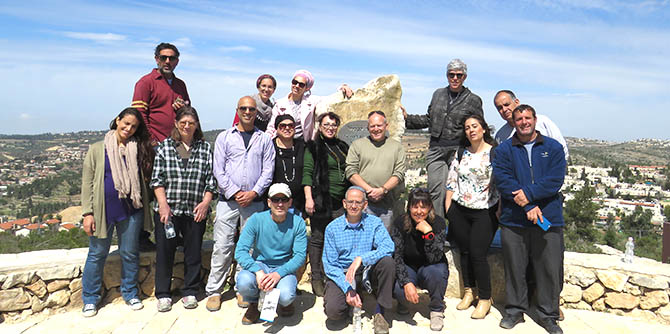

On March 15–16, 2017, the fellows of the Mandel Program for Local Leadership in Yeruham and Ramat Hanegev convened at Neve Ilan, in the hills of the Jerusalem corridor, for a two-day retreat on the topic “Leadership Dilemmas: Opportunities, Constraints, and Excuses.” The retreat enabled participants to explore the core concepts under discussion both theoretically and experientially, as well as to examine where they intersect. Constraints are ever-present in our field of work. They provide excuses for inaction while at the same time allowing necessity to be the mother of invention and yielding creative new solutions.
The first day of the retreat began with a tour of the Castel, a battle site steeped in tales of the War of Independence that include stories about leadership, camaraderie, and determination, as well as stories about constraints, opportunities, and excuses – for both defeat and victory.
Other sessions on the first day included the following:
-
Yohai Rosenberg, a movie director, offered a reflective view of opportunities, constraints, and excuses via the medium of film, examining the protagonists of documentaries and fictional movies.
-
Aliza Fruchtman, a creativity coach, gave a workshop on “Creative Consciousness,” which presented participants with situations that required them to improvise responses while they developed their self-awareness and listened to others.
-
Rabbi David Singer gave the participants the opportunity to engage in dialogical study in which they examined the barriers and opportunities presented by speech, and the complex relationship between speech that comes from the heart and speech that touches the heart.
On the second day of the retreat, three group activities were held, each focusing on a different area of interest: texts that the participants wrote in advance of the retreat; self-reflection on what the participants noticed in their surroundings; and self-reflection on the different kinds of stands the participants take in different situations.
The retreat had a strong bonding effect, and helped the participants gain a keener understanding of the relations opportunities, constraints, and excuses, and of the interplay between these concepts in every activity that leads to change.

{kind=link}